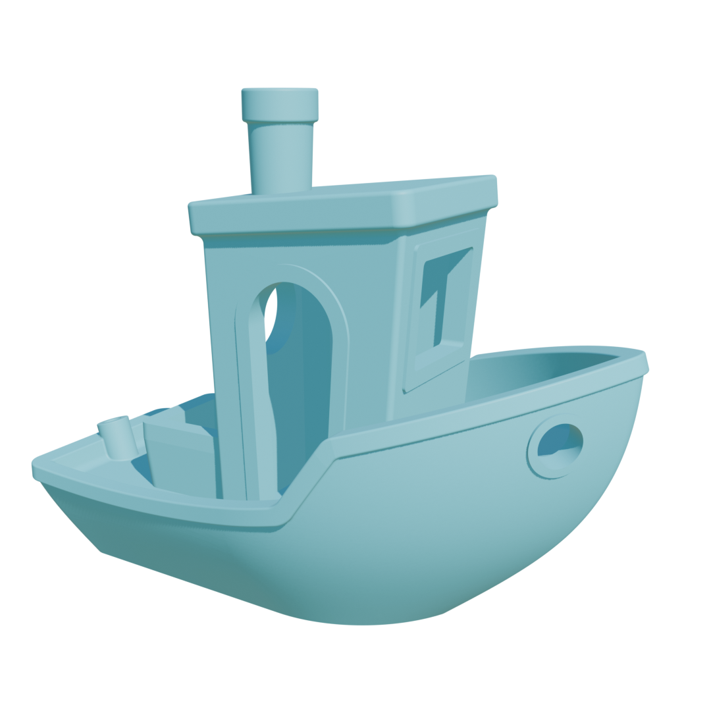
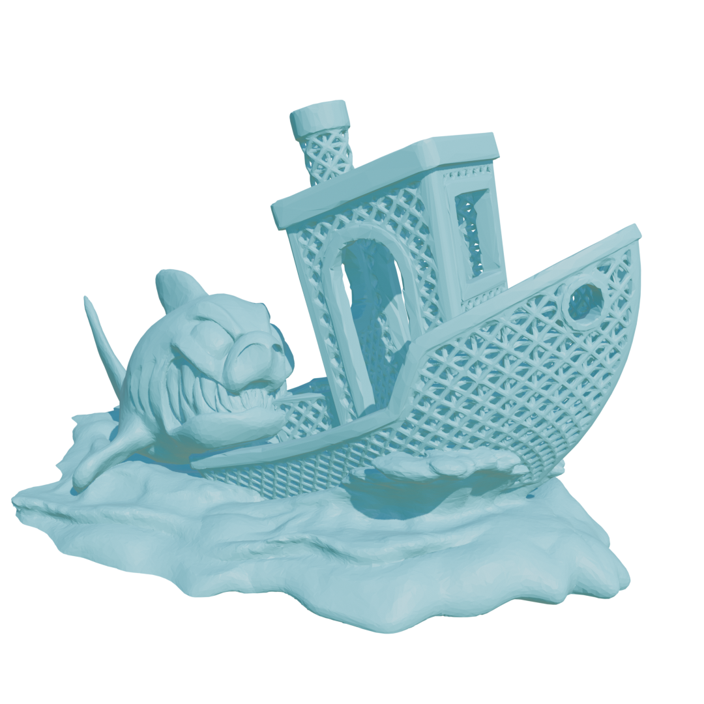
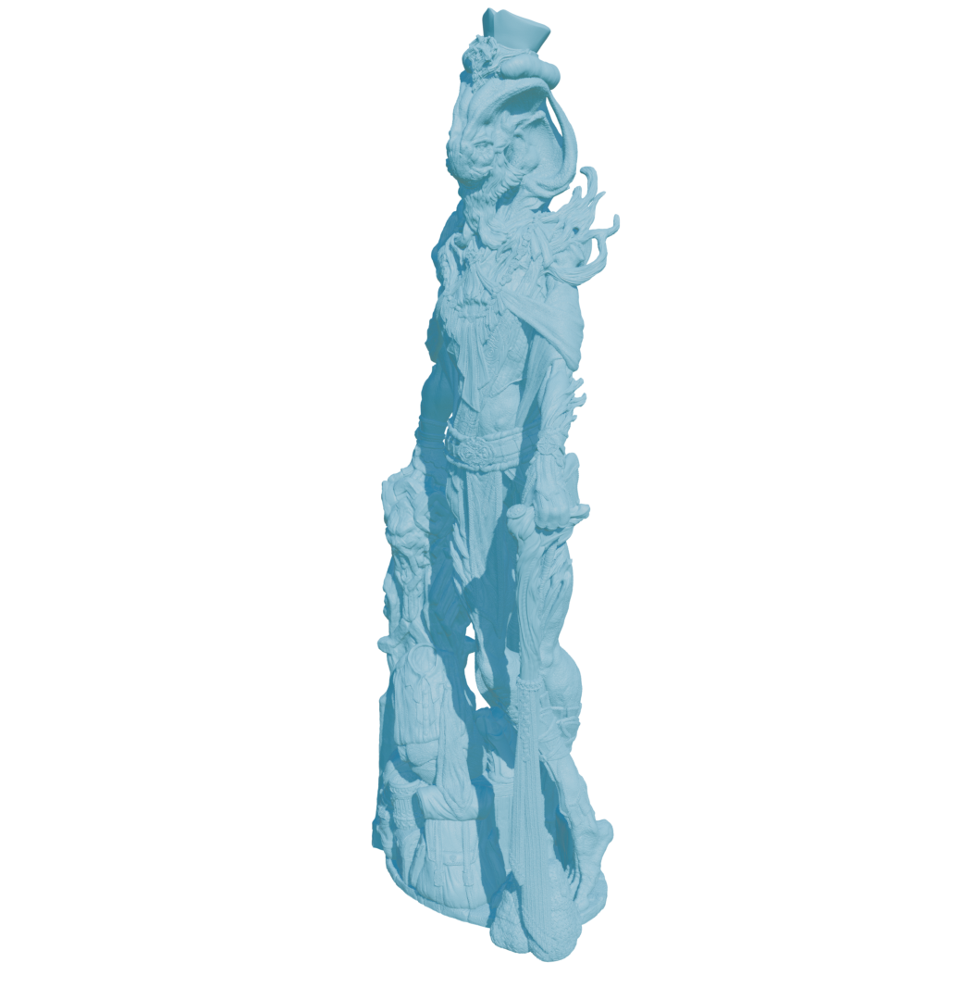

Intermediate Presentation
Intuitive Definition
Line integral along $C$, accumulating differential signed angles.
$$w(\bm{x}) = \frac{1}{2\pi} \int_{\mathcal{C}} \frac{(\bm{y}-\bm{x})^\perp \cdot d\bm{y}}{\|\bm{y}-\bm{x}\|^2}$$
Continuous formulation in 3D
Discrete formulation
Discrete formulation Triangles
| Mesh | Triangles: $N$ | Grid Resolution: $M$ | Evaluations: $N \times M$ | Brute Force |
|---|---|---|---|---|
| benchy | 225,154 | $256^3$ | $3.78 \times 10^{12}$ | $52,4 sec$ |
| $512^3$ | $3.02 \times 10^{13}$ | - | ||
| $1024^3$ | $2.42 \times 10^{14}$ | - | ||
| jaws_attack | 538,660 | $256^3$ | $9.04 \times 10^{12}$ | 130 sec |
| $512^3$ | $7.23 \times 10^{13}$ | - | ||
| $1024^3$ | $5.78 \times 10^{14}$ | - | ||
| snakeman | 5,000,608 | $256^3$ | $8.39 \times 10^{13}$ | 1213 sec |
| $512^3$ | $6.71 \times 10^{14}$ | - | ||
| $1024^3$ | $5.37 \times 10^{15}$ | - |



Complex, mesh with $N$ segments. Direct evaluation requires $\mathcal{O}(NM)$ operations for $M$ query points.
Build some kind of BVH.
Each node $K$ stores geometry dependent taylor coefficients centered at centroid $\tilde{p}$:
For query point $q$, evaluate Acceptance Criterion of node:
$\|q-\tilde{r}\|_2 < \beta\cdot\tilde{r}$.
Near-field (keep going)
Far-field (Approximate)
Not visited at all
Fast, highly accurate, smooth winding field with open/closed surface robustness.